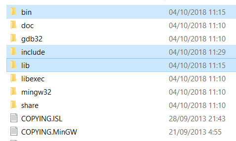
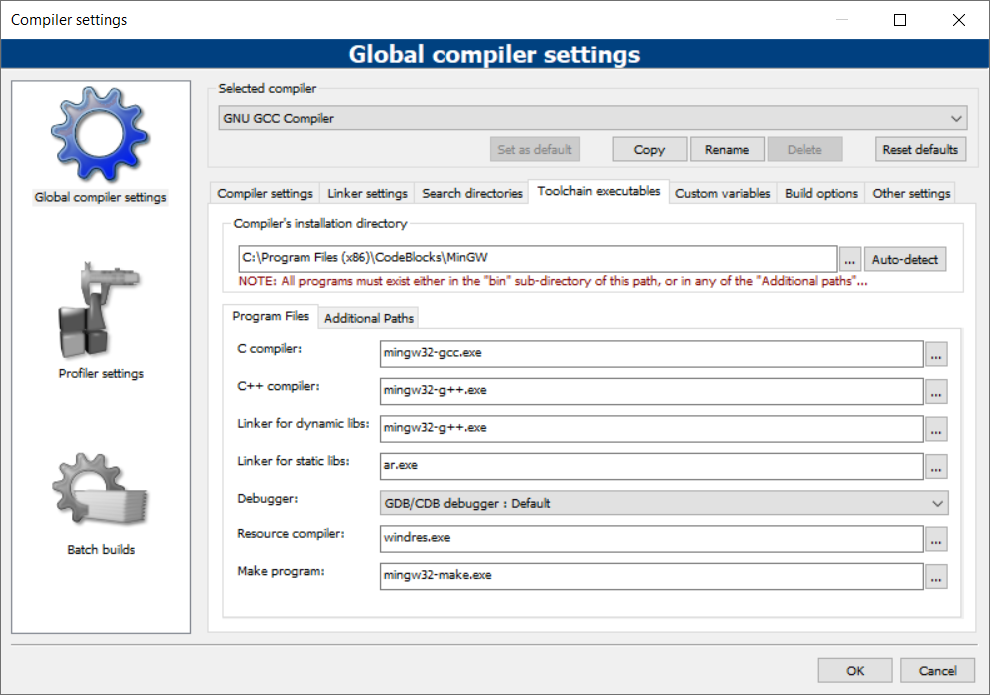
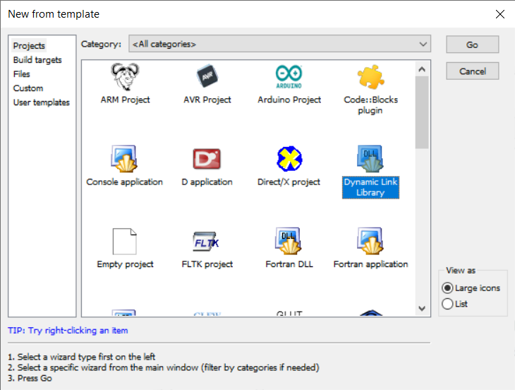
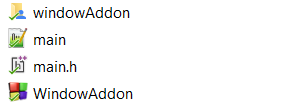
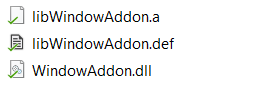
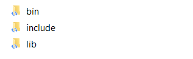

This page will teach you how to install the Window Add-on and all the extra libraries and files that it needs to run properly. If you want to update your current installation you can follow this exact same guide but deleting all old installation files first.
Installing Allegro
Allegro is the core library used to bring to life the Window Add-on. You have to install it first in order to get all working. If you're updating Window Add-on, you only have to update Allegro if your binaries are compiled with a different version of Allegro than the one you have installed. If you're compiling Window-Addon from source code, this step is optional.
To install it, you can:
-
Recommended: Download pre-compiled binaries from Windows Downloads and copy the downloaded content into the root of your MinGW installation. 
- Compile latest Allegro from source code. The Allegro documentation has a nice tutorial on how to do it. You can find it here. You'll want to compile the Monolith debug version. Recommendation: You'll need to use MSYS to download and install some dependences, but the MinGW installation bundled with Code::Blocks doesn't have it by default. I recommend you to download a clean MinGW install from MinGW project that contains MSYS and copy msys folder to your Code::Blocks MinGW installation. Make sure you select MSYS option in the auto-installer. It is important that you use the MinGW bundled with Code::Blocks to compile Allegro.
Installing Window Add-on
Once we have Allegro installed, we can continue installing the Add-on. As with Allegro, you can:
- Download pre-compiled binaries at Windows Downloads. Make sure that you have the same GCC and Allegro versions.
- Compile binaries from source code by yourself. You can check how to do it below.
Compiling Window Add-on binaries from source code for Windows
Prerequisites: Allegro 5.2 (recommended version: 5.2.4) must be installed on your MinGW installation.
The objective of this tutorial is to teach you how to create both windowAddon.dll and windowAddon.a files needed to install the add-on into your MinGW installation. We will be using Code::Blocks to generate them.
Follow these steps in order to compile them from the source code:
-
Download the source code from the GitHub repository. The source code is located inside src folder.
-
Make sure that you set Code::Blocks MinGW path to be the MinGW installation where you want to install the Window Add-on. Go to Settings → Compiler → Toolchain executables to check that out.
 -
Go to File → New → Project and create a Dynamic Link Library Project. Name it "WindowAddon". If you don't name it like this, you'll have to modify the name of the final compiled files.
 -
Make a copy of the Window Add-on sources into the root of this new project and put it in a directory called windowAddon. You can not choose this name, make sure you type it right.
 -
Replace your main.h and main.cpp with these samples:
main.h// Version 1.1#ifndef __WINDOWADDON_H__#define __WINDOWADDON_H__#ifdef _WIN32 //Windows 32 and 64 bits#include <windows.h>#ifdef BUILD_DLL#define DLL_EXPORT __declspec(dllexport)#else#define DLL_EXPORT __declspec(dllimport)#endif#endif#include "windowAddon/Window.h" //Window Add-on main header file#include "windowAddon/Drawables.h"#endif // __WINDOWADDON_H__main.cpp
#include "main.h"extern "C" DLL_EXPORT BOOL APIENTRY DllMain(HINSTANCE hinstDLL, DWORD fdwReason, LPVOID lpvReserved){switch (fdwReason){case DLL_PROCESS_ATTACH:// attach to process// return FALSE to fail DLL loadbreak;case DLL_PROCESS_DETACH:// detach from processbreak;case DLL_THREAD_ATTACH:// attach to threadbreak;case DLL_THREAD_DETACH:// detach from threadbreak;}return TRUE; // succesful}
In more detail: First of all, you have to include the headers that you want to be accessible when using the library. You also have to delete the sample function that Code::Blocks creates with the project. The provided samples are the ones intended to be used, but feel free to modify anything you want in order to fit your needs. -
Compile the project. Make sure you have selected the Release build option and click Rebuild to compile it from zero (to ensure you are not using some intermediate files that have been created during a possible test compile). You'll see some warnings coming from CommonUtils.h and Event.h, but this is fine.
-
Now you should see three files inside bin/Release directory of the project named windowAddon.a, windowAddon.dll and windowAddon.def. We're interested in the first two. Create a directory somewhere to throw all the installation files in. Then create a folder named bin inside your installation files folder and put windowAddon.dll in it. Do the same with windowAddon.a but in a folder called lib. You can download include folder at Windows Downloads. Now your installation files folder should look like that:
And that's it, you have created the installation files successfully. Now you can continue to the next section to finish your installation process.
NOTE: If you update your MinGW installation (more precisely GCC) you'll have to recompile the Add-on again.
Install the files
Whether you have downloaded or compiled the files, now what you have to do is to install them on your MinGW setup. It's as simple as drag and drop these files into MinGW's root directory. This process should not override any file, so if a window pops up warning that you'll are going to do that is because you had an older installation of Allegro or Window Add-on and you should delete those files first.
How to use the Window Add-on in your Code::Blocks project
And how do you use both Allegro and the add-on? First what you have to do is to say to your compiler how to link to these libraries. This can be done by going to Settings → Compiler → Linker Settings and adding the flags -lallegro_monolith-debug and -lWindowAddon.

And now you can start including the library and compile your own projects with it. Have fun.